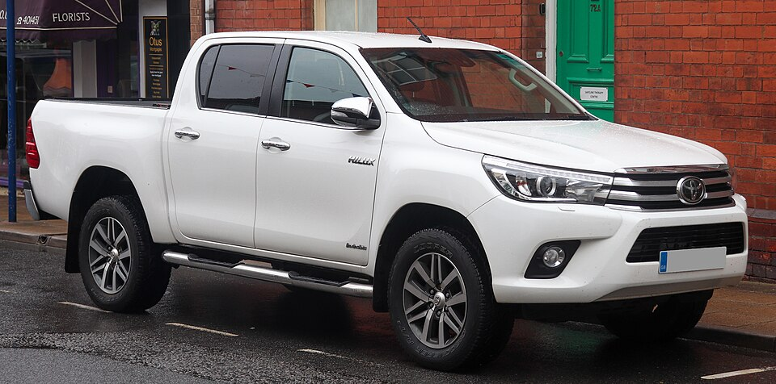

Agencias verificadas
Cada agencia tiene local en Azul y la damos de alta nosotros. Nadie publica sin ser agencia.
Compará los autos de las agencias del pueblo sin recorrer una por una. Cada auto lo respalda un negocio con local y nombre.

Cada agencia tiene local en Azul y la damos de alta nosotros. Nadie publica sin ser agencia.
VTV, dueños, permuta y financiación en cada ficha, para comparar sin preguntar lo básico.
Consultás por WhatsApp a la agencia que tiene el auto. Sin intermediarios y sin comisión para vos.